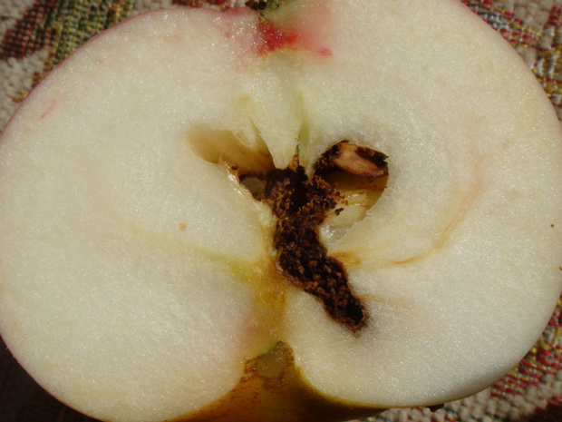

Вредители и Болезни - Pests and Diseases 6/13/09—9/24/18

Белена черная - Hyoscyamus niger
3 images

Берёза повислая - Betula pendula
4 images

Брусника - Vaccinium vitis-idaea
35 images

Валериана лекарственная - Valeriana officinalis
2 images

Василек шероховатый - Centaurea scabiosa
2 images

Вишня кислая - Prunus cerasus
9 images

Вяз гладкий - Ulmus laevis
6 images

Герань лесная - Geranium sylvaticum
2 images

Голубика обыкновенная - Vaccinium uliginosum
2 images

Горох посевной - Pisum sativum
2 images

Дуб обыкновенный - Quercus robur
8 images

Дурман обыкновенный - Datura stramonium
7 images

Ель обыкновенная - Picea abies
11 images

Жимолость обыкновенная - Lonicera xylosteum
2 images

Земляника лесная - Fragaria vesca
3 images

Ива Накамуры разн. Хоккайдская - Salix nakamurana var. yezoalpina
4 images

Клён остролистный - Acer platanoides
28 images

Клевер - Trifolium spp
11 images

Клубника - Fragaria x ananassa
3 images
Колокольчик - Campanula spp
4 images
Короставник - Knautia spp
3 images
Крапива двудомная - Urtica dioica
8 images
Красавка обыкновенная - Atropa bella-donna
4 images
Крушина ломкая - Frangula alnus
4 images
Купена душистая - Polygonatum odoratum
3 images
Купырь лесной - Anthriscus sylvestris
4 images
Лавр благородный - Laurus nobilis
1 image
Ландыш майский - Convallaria majalis
4 images
Липа сердцевидная - Tilia cordata
10 images
Любка двулистная - Platanthera bifolia
1 image
Лютик - Ranunculus spp
2 images
Лядвенец - Lotus spp
1 image
Малина обыкновенная - Rubus idaeus
6 images
Марьянник - Melampyrum spp
4 images
Мать-и-Мачеха обыкновенная - Tussilago farfara
1 image
Одуванчик лекарственный - Taraxacum officinale
15 images
Ольха серая - Alnus incana
16 images
Орляк обыкновенный - Pteridium aquilinum
1 image
Ортилия однобокая - Orthilia secunda
2 images
Осина - Populus tremula
14 images
Перец однолетний - Capsicum annuum
2 images
Петуния - Petunia spp
7 images
Пион лекарственный - Paeonia officinalis
4 images
Пихта белокорая - Abies nephrolepis
4 images
Ревень волнистый - Rheum rhabarbarum
2 images
Рододендрон - Rhododendron spp
3 images
Роза майская - Roda majalis
18 images
Рябина обыкновенная - Sorbus aucuparia
8 images
Сирень обыкновенная - Syringa vulgaris
1 image
Смородина - Ribes spp
5 images
Сныть обыкновенная - Aegopodium podagraria
10 images
Сосна - Pinus spp
11 images
Табак - Nicotiana spp
4 images
Томат съедобный - Lycopersicon esculentum
23 images
Троммсдорфия крапчатая - Trommsdorffia maculata
3 images
Форзиция европейская - Forsythia europaea
2 images
Хрен деревенский - Armoracia rusticana
1 image
Цуккини - Cucurbita pepo var. cylindrica
3 images
Шафран весенний - Crocus vernus
2 images
Шиповник собачий - Rosa canina
6 images
Явор - Acer pseudoplatanus
4 images



Вредители и Болезни - Pests and Diseases